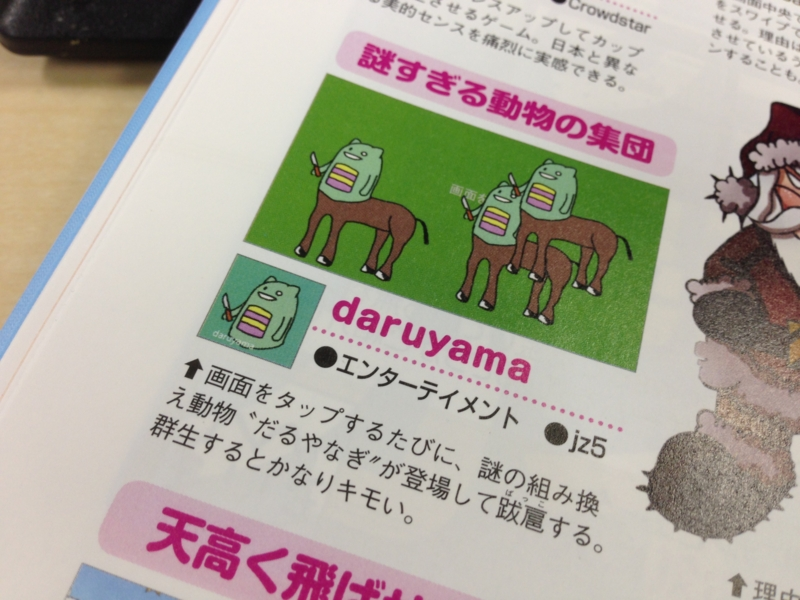
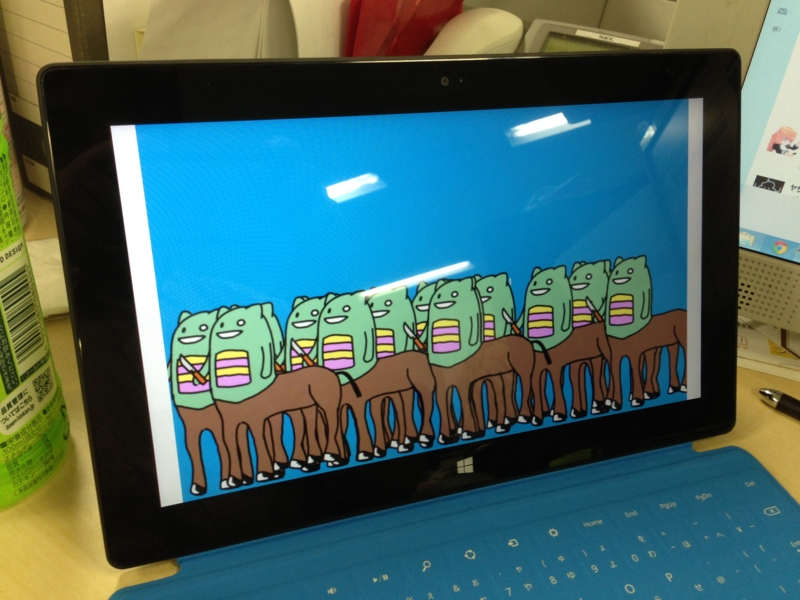

週刊アスキーに“キモい”と言われた件について
公開日：

http://garicchi.com/blog/?p=241 で知ったのだけれど、だるやなぎアプリの一角を占める「daruyama」が週刊アスキーの増刊号に掲載されたのだそうだ。

週刊アスキー 4/26号増刊 8・7・XPで使える Windows無料ソフト2013版
- 出版社/メーカー: アスキー・メディアワークス
- 発売日: 2013/03/15
- メディア: 雑誌
- クリック: 1回
- この商品を含むブログを見る
ちなみに“だるやなぎ”そのものは遺伝子組み換え動物じゃない。だるやなぎ“の”遺伝子組み換え動物が沸くだけだ。あと、いかに正しいとはいえ“群生するとキモい”といわれると悲しい。いや、まぁ、いいんですけど（笑

ちなみに、とりあえず1日使ってみて感じた Surface RT の残念なところ - だるろぐ で「ARM で動作しない」と書いたけれどあれは間違いというか、あの後ちゃんと動いた。初回実行時にはインターネット接続が必要なのかもしれない？ あんまりよく検証してない。

ちなみに、元ネタはこれらしい。京大かどこかの研究室。
あと、こっちもよろしく。ARM 対応に期待！